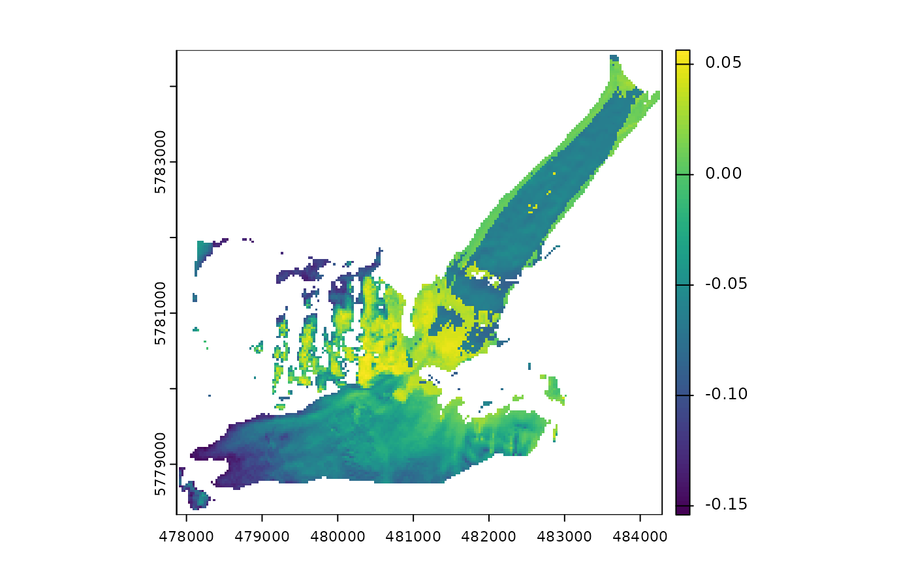
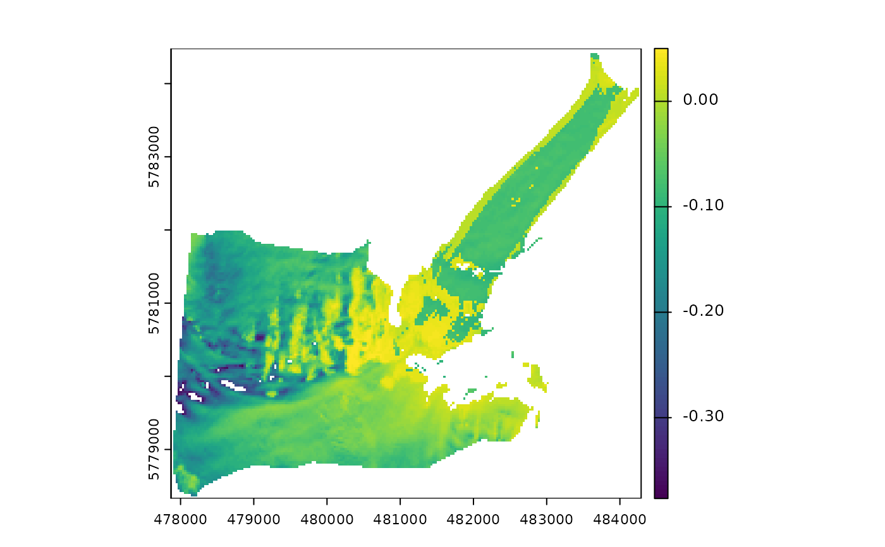
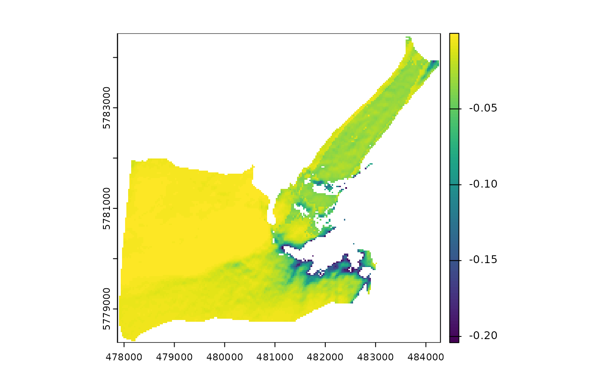
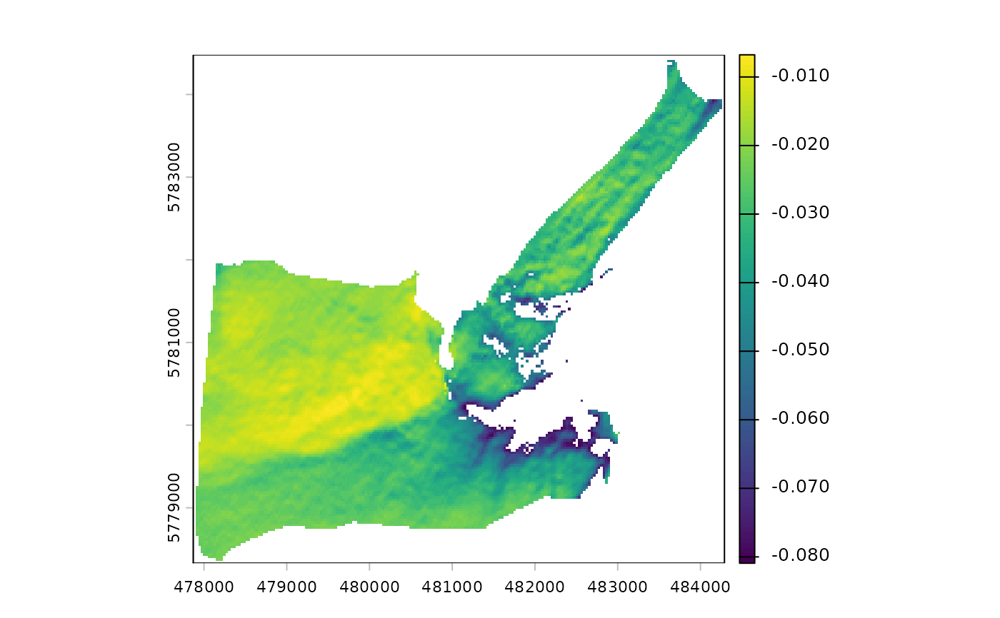
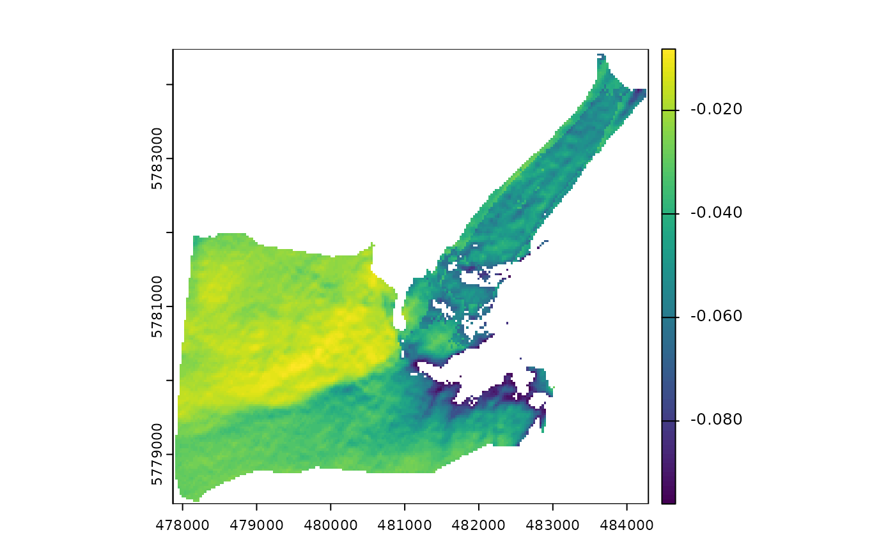
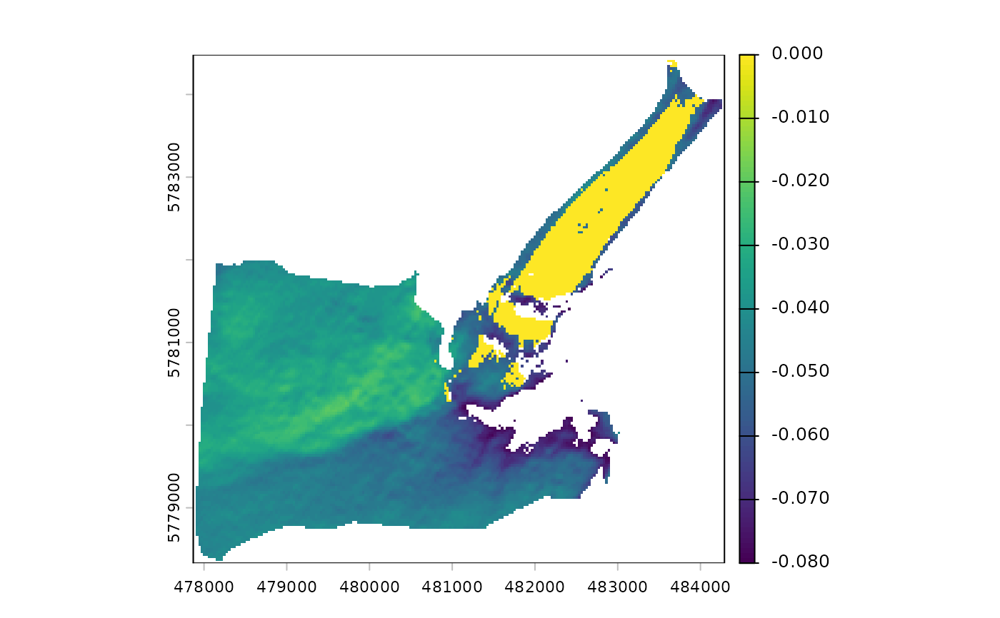
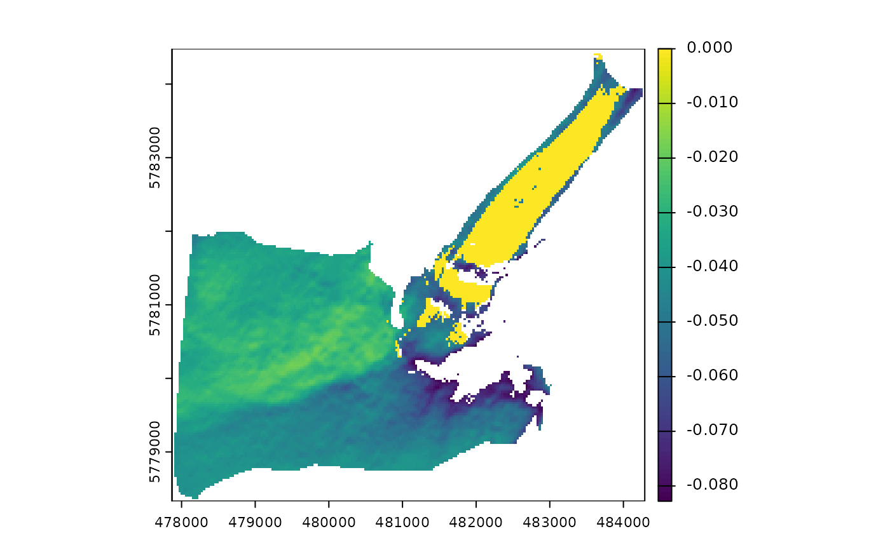

Anisotropy correction of reflected radiation over melting snow and glacier ice
Source:R/albedo_sat.R
f_BRDF.RdThis tool corrects for the anisotropy of reflected radiation by melting snow and ice. For a given surface type, the correction is carried out using an empirical model of the Bidirectional Reflectance Distribution Function (BRDF) that depends on the wavelength bands and the view-solar geometry. The procedure is applicable to visible, near-infrared (NIR), and shortwave-infrared (SWIR) wavelenghts. More details about the parameterizations can be found in the references list.
Arguments
- SAA
SpatRaster or numeric. Solar azimuth angle in degrees.
- SZA
SpatRaster or numeric. Solar zenith angle in degrees.
- VAA
SpatRaster or numeric. Satellite sensor azimuth angle in degrees.
- VZA
SpatRaster or numeric. Satellite sensor zenith angle in degrees.
- slope
SpatRaster or numeric. Surface slope in degrees.
- aspect
SpatRaster or numeric. Surface aspect in degrees.
- method
character. Number of spectral bands considered for the anisotropy correction. There are two options available: "twobands" (green and NIR) using the parameterizations of Greuell and De Ruyter De Wildt (1999) for ice and Koks (2001) for snow, and "fivebands" (blue, red, NIR, SWIR1, and SWIR2) using the methods described in Ren et al. (2021) .
- green
SpatRaster. Green band surface reflectance (0.53-0.59 um).
- NIR
SpatRaster. Near-infrared band surface reflectance (0.85-0.88 um).
- th
numeric. NDSII threshold to discriminate between snow and ice.
Value
Returns a SpatRaster with two layers for method="twobands" and five layers
for method="fivebands". Each layer contains the anisotropic reflection factors (f)
for each spectral band and surface type (snow or ice). All f values represent the
difference between the satellite albedo retrievals and the surface reflectance observations.
Notes
f is not calculated for method="twobands" if the green or the NIR surface
reflectance values are greater than one or for pixels for which the SZA relative to the inclined
surface is >65.51° over snow or >74.2° over ice. For method="fivebands", f is not
calculated if the SZA relative to the inclined surface is >70.9° over snow or >57.6°
over ice.
References
De Ruyter De Wildt MS, Oerlemans J, Björnsson H (2002).
“A method for monitoring glacier mass balance using satellite albedo measurements: application to Vatnajökull, Iceland.”
Journal of Glaciology, 48(161), 267–278.
doi:10.3189/172756502781831458
.
Greuell W, De Ruyter De Wildt M (1999).
“Anisotropic reflection by melting glacier ice: measurements and parametrizations in Landsat TM Bands 2 and 4.”
Remote Sensing of Environment, 70(3), 265–277.
doi:10.1016/S0034-4257(99)00043-7
.
Koks M (2001).
Anisotropic reflection of radiation by melting snow. Landsat TM bands 2 and 4.
Master's thesis, Universiteit Utrecht. Instituut voor Marien en Atmosferisch Onderzoek Utrecht (IMAU).
Ren S, Miles ES, Jia L, Menenti M, Kneib M, Buri P, McCarthy MJ, Shaw TE, Yang W, Pellicciotti F (2021).
“Anisotropy parameterization development and evaluation for glacier surface albedo retrieval from satellite observations.”
Remote Sensing, 13(9), 1714.
doi:10.3390/rs13091714
.
Examples
library(terra)
outline <- system.file("extdata/athabasca_outline.shp", package = "SatRbedo")
green <- system.file("extdata/athabasca_B03_20200911.tif", package = "SatRbedo")
nir <- system.file("extdata/athabasca_B8A_20200911.tif", package = "SatRbedo")
dem <- system.file("extdata/athabasca_dem.tif", package = "SatRbedo")
green <- preproc(grd = green, outline = outline)
nir <- preproc(grd = nir, outline = outline)
dem <- preproc(grd = dem, outline = outline)
SAA <- 164.8
SZA <- 48.9
VAA <- 90.9
VZA <- 5.2
slope <- terra::terrain(dem, v = "slope", neighbors = 4, unit = "degrees")
aspect <- terra::terrain(dem, v = "aspect", neighbors = 4, unit = "degrees")
# f coefficients for two bands
th <- snow_or_ice(green, nir)$th
f <- f_BRDF(
SAA = SAA, SZA = SZA, VAA = VAA, VZA = VZA,
slope = slope, aspect = aspect,
method = "twobands", green = green, NIR = nir,
th = th
)
plot(f[[1]])

plot(f[[2]])

# f coefficients for five bands
th <- snow_or_ice(green, nir)$th
f <- f_BRDF(
SAA = SAA, SZA = SZA, VAA = VAA, VZA = VZA,
slope = slope, aspect = aspect,
method = "fivebands", green = green, NIR = nir,
th = th
)
plot(f[[1]])

plot(f[[2]])

plot(f[[3]])

plot(f[[4]])

plot(f[[5]])
